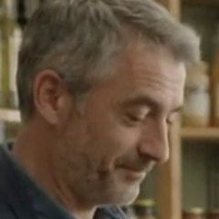
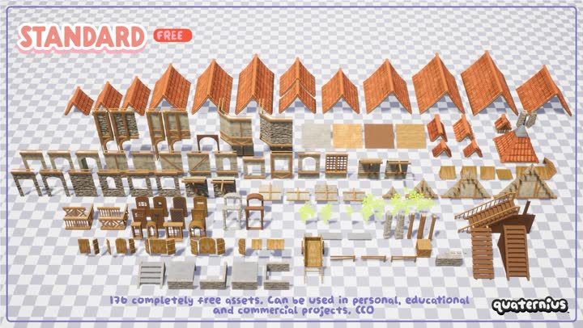
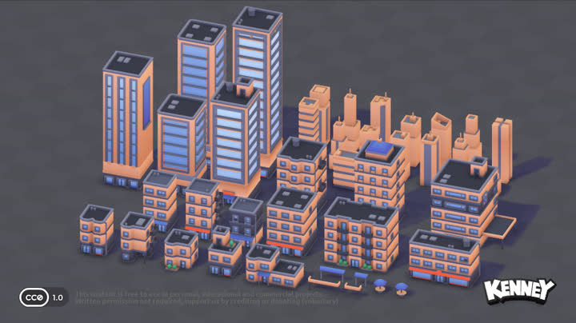
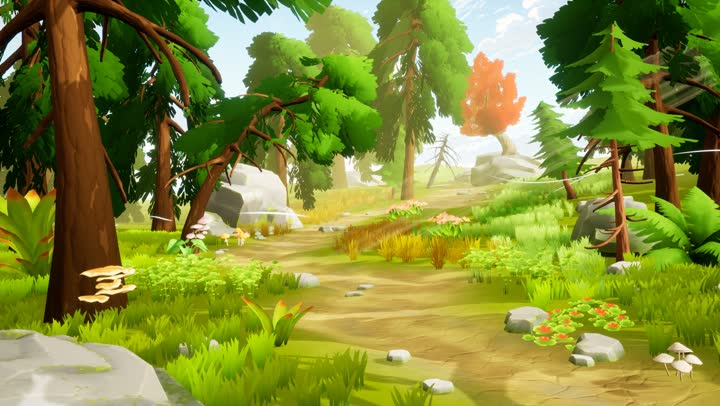
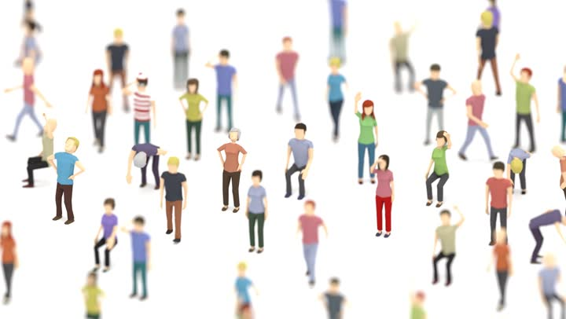
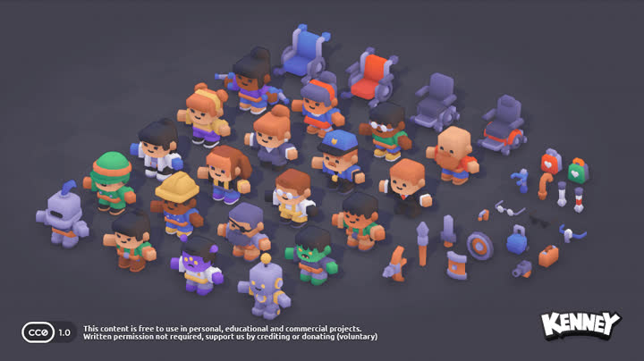

<title>Village FLE</title>
<link rel="preconnect" href="https://fonts.googleapis.com">
<link rel="stylesheet" href="https://fonts.googleapis.com/css2?family=Figtree:wght@400;500;600;700;800&display=swap">
<style>
:root{
  --fond:#f4f2ee; --carte:#fffdf9; --encre:#1d1b18; --doux:#5f5a52; --pale:#8d867b; --filet:#e3ded5;
  --accent:#c2412d; --accent-doux:#f6e3dd; --vert:#2f7d4f; --vert-doux:#e0f0e5; --bleu:#2a5d8f;
  --ombre-txt:rgba(0,0,0,.55);
  color-scheme:light;
}
@media (prefers-color-scheme:dark){:root:not([data-theme="light"]){
  --fond:#161513; --carte:#211f1c; --encre:#f1ede6; --doux:#bdb5a9; --pale:#8a8378; --filet:#36322d;
  --accent:#e2664f; --accent-doux:#3a221c; --vert:#5fbf86; --vert-doux:#1d3226; --bleu:#7fb0e0; color-scheme:dark;}}
:root[data-theme="dark"]{
  --fond:#161513; --carte:#211f1c; --encre:#f1ede6; --doux:#bdb5a9; --pale:#8a8378; --filet:#36322d;
  --accent:#e2664f; --accent-doux:#3a221c; --vert:#5fbf86; --vert-doux:#1d3226; --bleu:#7fb0e0; color-scheme:dark;}
*{box-sizing:border-box}
body{margin:0;background:var(--fond);color:var(--encre);font:16px/1.55 Figtree,system-ui,sans-serif;padding-inline:20px;padding-block:28px 64px}
main{max-width:1080px;margin:0 auto;display:grid;gap:56px}
h1,h2,h3{text-wrap:balance;margin:0;line-height:1.15}
h1{font-size:clamp(30px,5vw,46px);font-weight:800;letter-spacing:-.02em}
h2{font-size:clamp(22px,3vw,28px);font-weight:800;letter-spacing:-.01em}
h3{font-size:17px;font-weight:700}
p{margin:0}
.etiquette{font-size:12px;font-weight:700;letter-spacing:.08em;text-transform:uppercase;color:var(--accent)}
.chapo{max-width:66ch;color:var(--doux);font-size:17px}
section{display:grid;gap:20px}
.entete{display:grid;gap:12px}
.note{font-size:14px;color:var(--pale)}

/* boucle de jeu */
.boucle{display:grid;grid-template-columns:repeat(5,1fr);gap:10px;counter-reset:e}
.boucle li{list-style:none;background:var(--carte);border:1px solid var(--filet);border-radius:14px;padding:14px;display:grid;gap:4px;align-content:start}
.boucle li::before{counter-increment:e;content:counter(e);font-weight:800;color:var(--accent);font-size:20px}
.boucle b{font-size:15px}.boucle span{font-size:14px;color:var(--doux)}
@media (max-width:760px){.boucle{grid-template-columns:1fr 1fr}}

/* maquette de jeu */
.jeu{position:relative;border-radius:18px;overflow:hidden;aspect-ratio:16/9;max-width:100%;background:#7aa6c9 url(apercu/scene-colombages.jpg) center/cover;color:#1d1b18;container-type:inline-size}
.jeu::after{content:"Image : démo du pack Quaternius (aperçu du style, pas notre village)";position:absolute;right:10px;top:8px;font-size:11px;color:#fff;background:rgba(0,0,0,.35);padding:2px 8px;border-radius:99px}
.missions{position:absolute;left:2.2cqw;top:2.6cqw;background:rgba(255,253,249,.94);border-radius:12px;padding:1.4cqw 1.8cqw;font-size:clamp(11px,1.45cqw,15px);min-width:23cqw;display:grid;gap:.5cqw}
.missions h4{margin:0;font-size:1.1em;font-weight:800}
.missions li{list-style:none;display:flex;gap:.6em;align-items:center}
.missions li i{width:1.1em;height:1.1em;border-radius:4px;border:2px solid #b9b1a5;flex:none;display:grid;place-items:center;font-style:normal;font-size:.8em;color:#fff}
.missions li.fait i{background:#2f7d4f;border-color:#2f7d4f}
.missions li.fait span{text-decoration:line-through;color:#7d766b}
.missions ul{margin:0;padding:0;display:grid;gap:.35cqw}
.bourse{position:absolute;right:2.2cqw;top:6cqw;background:rgba(255,253,249,.94);border-radius:99px;padding:.6cqw 1.4cqw;font-weight:800;font-size:clamp(12px,1.6cqw,17px);font-variant-numeric:tabular-nums}
.pnj{position:absolute;left:44%;top:43%;width:3.4cqw;height:3.4cqw;border-radius:50%;background:#fff;display:grid;place-items:center;font-weight:900;color:var(--accent);font-size:2.2cqw;animation:saut 1.2s ease-in-out infinite}
@keyframes saut{50%{translate:0 -.8cqw}}
.dialogue{position:absolute;left:2.2cqw;right:2.2cqw;bottom:2.2cqw;background:rgba(255,253,249,.96);border-radius:14px;padding:1.6cqw;display:grid;grid-template-columns:auto 1fr;gap:1.6cqw;align-items:start;font-size:clamp(12px,1.6cqw,17px)}
.dialogue img{width:8cqw;height:8cqw;border-radius:12px;object-fit:cover}
.qui{font-size:.75em;font-weight:800;letter-spacing:.06em;text-transform:uppercase;color:#c2412d}
.dit{font-weight:700;font-size:1.15em;margin:.2em 0 .7em}
.choix{display:flex;flex-wrap:wrap;gap:.6cqw}
.choix button,.pieces button{font:inherit;font-size:.92em;border:2px solid #d9d2c6;background:#fff;color:#1d1b18;border-radius:99px;padding:.45em 1em;cursor:pointer}
.choix button:hover,.pieces button:hover{border-color:#1d1b18}
.choix button.micro{border-style:dashed;color:#7d766b}
.retour{font-size:.9em;color:#2a5d8f;font-weight:600;min-height:1.3em;margin-top:.5em}
.pieces{display:flex;gap:.6cqw;flex-wrap:wrap}
.pieces button{border-radius:50%;width:3.4em;height:3.4em;padding:0;font-weight:800;background:#f3d36b;border-color:#c9a536}
.pieces button.billet{border-radius:8px;width:4.6em;background:#bfe0c6;border-color:#7fb08c}
.jeu-pied{display:flex;justify-content:space-between;gap:12px;flex-wrap:wrap;align-items:center}
.btn{font:inherit;font-weight:700;border:0;background:var(--encre);color:var(--fond);border-radius:99px;padding:10px 18px;cursor:pointer}
@container (max-width:560px){.missions{display:none}.dialogue{grid-template-columns:1fr}.dialogue img{display:none}.pnj{display:none}}

/* cartes */
.grille{display:grid;grid-template-columns:repeat(3,1fr);gap:16px}
.grille.deux{grid-template-columns:repeat(2,1fr)}
.grille.quatre{grid-template-columns:repeat(4,1fr)}
@media (max-width:860px){.grille,.grille.quatre{grid-template-columns:1fr 1fr}}
@media (max-width:560px){.grille,.grille.deux,.grille.quatre{grid-template-columns:1fr}}
.carte{background:var(--carte);border:1px solid var(--filet);border-radius:16px;overflow:hidden;display:grid;grid-template-rows:auto 1fr}
.carte.choisie{border:2px solid var(--accent)}
.carte img{width:100%;aspect-ratio:16/9;object-fit:cover;display:block;background:var(--filet)}
.carte .corps{padding:16px;display:grid;gap:8px;align-content:start}
.carte .corps p{font-size:15px;color:var(--doux)}
.pastille{justify-self:start;font-size:12px;font-weight:700;border-radius:99px;padding:2px 10px;background:var(--accent-doux);color:var(--accent)}
.pastille.vert{background:var(--vert-doux);color:var(--vert)}
.pour,.contre{font-size:14px;margin:0;padding-left:18px;display:grid;gap:2px}
.pour li::marker{content:"+  ";color:var(--vert);font-weight:800}
.contre li::marker{content:"–  ";color:var(--accent);font-weight:800}
.sans-image{aspect-ratio:16/9;display:grid;place-items:center;background:repeating-linear-gradient(135deg,var(--filet) 0 2px,transparent 2px 12px);color:var(--doux);font-weight:700;text-align:center;padding:16px}

/* plan */
.plan{background:var(--carte);border:1px solid var(--filet);border-radius:18px;padding:12px;overflow-x:auto}
.plan svg{display:block;width:100%;min-width:640px;height:auto}
.plan text{font-family:Figtree,system-ui,sans-serif}
.legende{display:flex;gap:18px;flex-wrap:wrap;font-size:14px;color:var(--doux)}
.legende span{display:inline-flex;gap:6px;align-items:center}
.legende i{width:12px;height:12px;border-radius:3px;display:inline-block}

.decisions{display:grid;gap:10px;counter-reset:d;padding:0;margin:0}
.decisions li{list-style:none;background:var(--carte);border:1px solid var(--filet);border-radius:14px;padding:14px 16px;display:grid;grid-template-columns:auto 1fr;gap:12px}
.decisions li::before{counter-increment:d;content:counter(d);width:28px;height:28px;border-radius:50%;background:var(--accent);color:#fff;display:grid;place-items:center;font-weight:800;font-size:14px}
.decisions p{color:var(--doux);font-size:15px}
</style>

<main>
  <header class="entete">
    <span class="etiquette">Aperçu avant production · rien n'est encore généré</span>
    <h1>Le village FLE</h1>
    <p class="chapo">Un village français à explorer. L'apprenant y vit une journée : il parle aux habitants pour accomplir des choses
      (acheter du pain, aller chez le médecin, prendre le train). Nos 15 vidéos deviennent les lieux du village.</p>
  </header>

  <section>
    <div class="entete"><span class="etiquette">Le jeu</span><h2>Une boucle simple, répétée dans chaque lieu</h2></div>
    <ol class="boucle">
      <li><b>Le carnet</b><span>« Ta journée » : 3 ou 4 missions du niveau (A1 d'abord).</span></li>
      <li><b>Se déplacer</b><span>On clique sur un lieu ou on marche dans la rue.</span></li>
      <li><b>Observer</b><span>En entrant, la vidéo de la scène montre un client : c'est le modèle.</span></li>
      <li><b>Parler</b><span>À toi : l'habitant te parle, tu réponds (choix de phrases, puis à voix haute).</span></li>
      <li><b>Agir</b><span>Payer, montrer, donner… La mission est tamponnée dans le carnet.</span></li>
    </ol>
  </section>

  <section>
    <div class="entete">
      <span class="etiquette">Maquette jouable</span>
      <h2>À la boulangerie : « Acheter du pain »</h2>
      <p class="chapo">Essaie le dialogue : choisis les phrases, puis paie avec les pièces. Le fond est une image de démonstration du style
        (pack Quaternius), pas encore notre village. Dans le dialogue, l'habitant garde le vrai visage de l'acteur de la vidéo.</p>
    </div>
    <div class="jeu" id="jeu">
      <div class="missions">
        <h4>Ta journée</h4>
        <ul>
          <li id="m-pain"><i>✓</i><span>Acheter du pain</span></li>
          <li><i></i><span>Acheter un médicament</span></li>
          <li><i></i><span>Aller chez le médecin</span></li>
          <li><i></i><span>Prendre le train de 10 h</span></li>
        </ul>
      </div>
      <div class="bourse" id="bourse">5,00 €</div>
      <div class="pnj" title="Quelqu'un veut te parler">!</div>
      <div class="dialogue">
        
        <div>
          <div class="qui">Le boulanger</div>
          <div class="dit" id="dit"></div>
          <div class="choix" id="choix"></div>
          <div class="retour" id="retour"></div>
        </div>
      </div>
    </div>
    <div class="jeu-pied">
      <p class="note">En production : la voix dit chaque réplique, et le bouton micro écoute la phrase de l'apprenant.</p>
      <button class="btn" id="rejouer">Recommencer le dialogue</button>
    </div>
  </section>

  <section>
    <div class="entete">
      <span class="etiquette">Direction artistique</span>
      <h2>Trois styles possibles</h2>
      <p class="chapo">Les images sont celles des bibliothèques gratuites et libres de droits (CC0) que j'ai trouvées. Ce sont des aperçus de
        style, pas nos rendus.</p>
    </div>
    <div class="grille">
      <article class="carte choisie">
        
        <div class="corps">
          <span class="pastille">Mon conseil</span>
          <h3>A · Village à colombages</h3>
          <p>Quaternius Medieval Village MegaKit (partie gratuite : 136 pièces) et Stylized Nature MegaKit. Esprit Normandie ou Alsace.</p>
          <ul class="pour"><li>Le plus proche de la vidéo que tu m'as montrée</li><li>Herbe, arbres, pavés très riches</li></ul>
          <ul class="contre"><li>Vitrines, enseignes, gare, croix de pharmacie : à faire dans Blender</li><li>La démo utilise aussi des pièces payantes</li></ul>
        </div>
      </article>
      <article class="carte">
        
        <div class="corps">
          <span class="pastille vert">Le plus léger</span>
          <h3>B · Petite ville moderne</h3>
          <p>Kenney City Kits et Mini Characters. Formes simples, couleurs à plat.</p>
          <ul class="pour"><li>Très fluide, même sur un vieux téléphone</li><li>Personnages assortis, déjà prêts</li></ul>
          <ul class="contre"><li>Beaucoup moins beau, plus « jouet »</li><li>Peu français</li></ul>
        </div>
      </article>
      <article class="carte">
        <div class="sans-image">Pas d'aperçu : rien n'existe encore<br>(une image fixe test coûterait peu)</div>
        <div class="corps">
          <span class="pastille vert">100 % original</span>
          <h3>C · Fait maison, esprit Provence</h3>
          <p>Modelé dans Blender et en code : crépi ocre, volets bleus, platanes, fontaine.</p>
          <ul class="pour"><li>Unique, et vraiment français</li><li>On décide de chaque détail</li></ul>
          <ul class="contre"><li>Plus long à produire</li><li>Je ne garantis pas la finition du style A</li></ul>
        </div>
      </article>
    </div>
    <article class="carte" style="grid-template-columns:minmax(0,1.2fr) minmax(0,1fr);grid-template-rows:auto">
      
      <div class="corps">
        <h3>La nature, quel que soit le style</h3>
        <p>Stylized Nature MegaKit (Quaternius, CC0) : arbres, buissons, fleurs, rochers. Avec de l'herbe animée et de l'eau en code,
          c'est ce qui donnera le côté « vivant » de la vidéo.</p>
      </div>
    </article>
  </section>

  <section>
    <div class="entete">
      <span class="etiquette">Les habitants</span>
      <h2>Le point le plus délicat</h2>
      <p class="chapo">Aucun pack gratuit n'a une boulangère en tablier ou un pharmacien en blouse au niveau du style A. Quatre pistes :</p>
    </div>
    <div class="grille quatre">
      <article class="carte choisie">
        
        <div class="corps"><span class="pastille">Pour démarrer</span><h3>Hybride</h3>
          <p>Silhouettes 3D simples dans la rue ; dans le dialogue, le vrai visage et la vraie voix de la vidéo.</p></div>
      </article>
      <article class="carte">
        
        <div class="corps"><h3>Silhouettes Quaternius</h3><p>Petites personnes en tenue moderne, pour animer les rues. Pas assez détaillées pour les gros plans.</p></div>
      </article>
      <article class="carte">
        
        <div class="corps"><h3>Kenney Mini Characters</h3><p>Mignons, modernes, animés. Parfaits avec le style B, décalés avec le style A.</p></div>
      </article>
      <article class="carte">
        <div class="sans-image">Sur mesure</div>
        <div class="corps"><h3>Générés par IA 3D</h3><p>Meshy ou Tripo : un habitant par métier, dans le style choisi. Il faut un compte et une clé API ; le résultat est variable.</p></div>
      </article>
    </div>
    <p class="note">Écarté : Quaternius Modular Character Outfits Fantasy, très beau mais en armures et tenues de fantasy.</p>
  </section>

  <section>
    <div class="entete">
      <span class="etiquette">Le plan</span>
      <h2>Quinze lieux, déjà écrits</h2>
      <p class="chapo">Chaque lieu reprend une vidéo interactive existante. La boulangerie serait une mission nouvelle, sans vidéo.</p>
    </div>
    <div class="plan" role="img" aria-label="Plan schématique du village et de ses lieux">
      <svg viewBox="0 0 1000 520" id="plan"></svg>
    </div>
    <div class="legende">
      <span><i style="background:var(--vert)"></i>A1</span>
      <span><i style="background:var(--bleu)"></i>A2</span>
      <span><i style="background:var(--accent)"></i>Nouvelle mission (sans vidéo)</span>
    </div>
  </section>

  <section>
    <div class="entete"><span class="etiquette">Avant de produire</span><h2>Ce que j'ai besoin que tu choisisses</h2></div>
    <ol class="decisions">
      <li><div><h3>Le style : A, B ou C ?</h3><p>Mon conseil : A (colombages), avec la nature Quaternius.</p></div></li>
      <li><div><h3>Les habitants</h3><p>Mon conseil : démarrer en hybride (visage et voix de la vidéo dans le dialogue), et tester la génération IA sur un seul habitant.</p></div></li>
      <li><div><h3>Le déplacement</h3><p>Cliquer pour aller (plus simple pour un public A1, et sur téléphone) ou marcher librement (clavier, joystick) ? Les deux sont possibles.</p></div></li>
      <li><div><h3>Prochaine étape, au coût maîtrisé</h3><p>Une seule image fixe de la rue dans le style choisi (rendue dans Blender), avant de construire le monde jouable.</p></div></li>
    </ol>
  </section>
</main>

<script>
/* ---------- maquette du dialogue ---------- */
const $ = id => document.getElementById(id);
let argent, prix, paye;
const euros = c => (c / 100).toFixed(2).replace('.', ',') + ' €';
const ETAPES = {
  debut: { dit: 'Bonjour ! Qu’est-ce que je vous sers ?', choix: [
    ['Bonjour ! Une baguette, s’il vous plaît.', () => { prix = 120; aller('ajout'); }],
    ['Au revoir !', () => dire('Il part déjà ? Dis d’abord ce que tu veux.')],
    ['Je voudrais un médicament.', () => dire('Ici, c’est une boulangerie : le médicament, c’est à la pharmacie.')]] },
  ajout: { dit: 'Voilà. Et avec ceci ?', choix: [
    ['C’est tout, merci.', () => aller('payer')],
    ['Un croissant aussi, s’il vous plaît.', () => { prix += 110; aller('payer'); }]] },
  payer: { dit: () => 'Ça fait ' + euros(prix) + ', s’il vous plaît.', pieces: true },
  fin: { dit: () => paye > prix ? 'Merci ! Je vous rends ' + euros(paye - prix) + '. Bonne journée !' : 'Merci ! Bonne journée !', choix: [
    ['Merci, au revoir !', () => { $('m-pain').classList.add('fait'); $('dit').textContent = 'Au revoir !'; $('choix').innerHTML = ''; dire('Mission accomplie : « Acheter du pain » est tamponnée dans ton carnet.'); }],
    ['Bonne nuit !', () => dire('On est le matin : on dit « Bonne journée » ou « Au revoir ».')]] }
};
function dire(t) { $('retour').textContent = t; }
function aller(nom) {
  const e = ETAPES[nom]; dire('');
  $('dit').textContent = typeof e.dit === 'function' ? e.dit() : e.dit;
  const c = $('choix'); c.innerHTML = ''; c.className = e.pieces ? 'pieces' : 'choix';
  if (e.pieces) {
    paye = 0;
    [[200, '2 €'], [100, '1 €'], [50, '50 c'], [20, '20 c'], [10, '10 c'], [500, '5 €']].forEach(([v, l]) => {
      const b = document.createElement('button'); b.textContent = l; if (v >= 500) b.className = 'billet';
      b.onclick = () => {
        if (v > argent) return dire('Tu n’as plus assez dans ton porte-monnaie.');
        argent -= v; paye += v; $('bourse').textContent = euros(argent);
        if (paye >= prix) { argent += paye - prix; setTimeout(() => { $('bourse').textContent = euros(argent); aller('fin'); }, 350); }
        else dire('Tu as donné ' + euros(paye) + '. Encore ' + euros(prix - paye) + '.');
      };
      c.appendChild(b);
    });
    dire('Clique sur les pièces pour payer.');
    return;
  }
  e.choix.forEach(([t, f]) => { const b = document.createElement('button'); b.textContent = t; b.onclick = f; c.appendChild(b); });
  const m = document.createElement('button'); m.className = 'micro'; m.textContent = 'Le dire au micro (en production)';
  m.onclick = () => dire('Dans le jeu, tu pourras dire la phrase à voix haute.'); c.appendChild(m);
}
function demarrer() { argent = 500; prix = 0; $('bourse').textContent = euros(argent); $('m-pain').classList.remove('fait'); aller('debut'); }
$('rejouer').onclick = demarrer; demarrer();

/* ---------- plan schématique ---------- */
const LIEUX = [
  ['Gare', 'À quelle heure ?', 40, 70, 'A1'], ['Hôtel', 'À la réception', 215, 70, 'A1'], ['Téléphones', 'Un forfait', 390, 70, 'A2'],
  ['Immeuble', 'L’ascenseur', 565, 70, 'A1'], ['Colocation', 'Chez Kenji', 740, 70, 'A1'],
  ['Boulangerie', 'Acheter du pain', 40, 300, 'new'], ['Épicerie', 'Les courses', 215, 300, 'A1'], ['Pharmacie', 'Le chemin', 390, 300, 'A1'],
  ['Cabinet médical', 'Chez le médecin', 565, 300, 'A1'], ['Fleuriste', 'Un bouquet', 740, 300, 'A1'],
  ['Café', 'Café ou thé ?', 40, 410, 'A1'], ['Glacier', 'Une glace', 215, 410, 'A1'], ['Restaurant', 'Menu · addition (A2)', 390, 410, 'A1'],
  ['Laverie', 'La lessive', 565, 410, 'A1'], ['Mairie', 'Objets trouvés', 740, 410, 'A1']];
const C = { A1: 'var(--vert)', A2: 'var(--bleu)', new: 'var(--accent)' };
const svg = $('plan'); const ns = 'http://www.w3.org/2000/svg';
const el = (n, a, p = svg) => { const e = document.createElementNS(ns, n); for (const k in a) e.setAttribute(k, a[k]); p.appendChild(e); return e; };
el('rect', { x: 20, y: 190, width: 900, height: 80, rx: 12, fill: 'var(--filet)' });
el('text', { x: 300, y: 236, 'text-anchor': 'middle', 'font-size': 16, 'font-weight': 700, fill: 'var(--doux)' }).textContent = 'Grande rue';
el('rect', { x: 915, y: 20, width: 55, height: 480, rx: 10, fill: 'var(--filet)' });
el('circle', { cx: 465, cy: 230, r: 22, fill: 'var(--carte)', stroke: 'var(--pale)', 'stroke-width': 2 });
LIEUX.forEach(([nom, sc, x, y, niv]) => {
  const g = el('g', {});
  el('rect', { x, y, width: 150, height: 92, rx: 12, fill: 'var(--carte)', stroke: C[niv], 'stroke-width': 2.5 }, g);
  el('rect', { x, y, width: 150, height: 8, rx: 4, fill: C[niv] }, g);
  el('text', { x: x + 12, y: y + 38, 'font-size': 15, 'font-weight': 800, fill: 'var(--encre)' }, g).textContent = nom;
  el('text', { x: x + 12, y: y + 62, 'font-size': 13, fill: 'var(--doux)' }, g).textContent = sc;
});
el('text', { x: 942, y: 260, 'text-anchor': 'middle', 'font-size': 13, 'font-weight': 700, fill: 'var(--doux)', transform: 'rotate(90 942 260)' }).textContent = 'Vers la plage';
</script>
